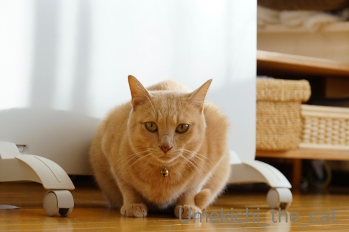
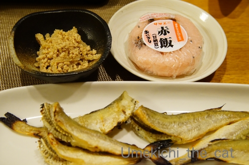
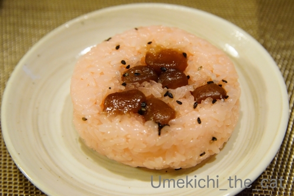
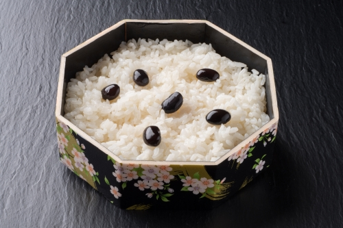
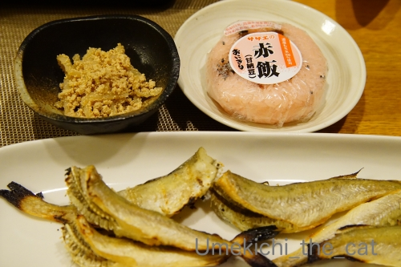
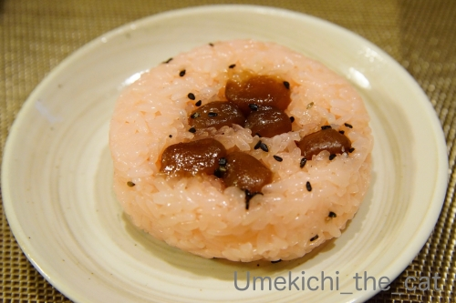
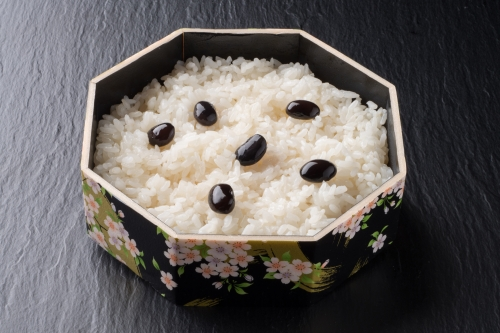

おかーさんの変な歌と北海道の食べ物 [梅吉]

とつぜん冷たくなった白い恋人に戸惑う梅吉さん？
スイッチを入れてないとこうやってうずくまって
![[猫]](https://blog.ss-blog.jp/_images_e/101.gif) ぬくないで・・・
ぬくないで・・・
と私に圧をかけてくるんですよ(ｰ ｰ;)
我が家は窓が多いので割と寒いです。
パネルヒーターでは寒々しくて先日はついにエアコン暖房ON！
あったかいって素敵〜♪こうなるともう後戻りはできない・・・
お膝猫も毎日です。
お膝＆ちゅうちゅうは必ずではないですがお誘いすると来ていただけるんですよ＾＾
そのお誘いの方法とは？
（15秒 【警告】変な歌声？掛け声？入り）
おかーさんの「梅吉 ちゅうちゅうの歌」。
変な歌は気にしないでくださいなんて言えるレベルではないですw
なので音量オフにするか大音量でおかーさんの歌を楽しむか、どちらかでお願いしますね(*>艸<)
私が指差しているのはちゅうちゅうポイント＝梅吉が吸う決まった場所、です。
人間より数倍嗅覚が発達しているくせにこうやって教えてあげないと
なかなか場所を探せないんですよ・・・
どういうこっちゃ。
今日の梅吉話題はこの辺でー。
 ↑ガブッと一押し↑
↑ガブッと一押し↑

さてさて、先日のおっとの札幌土産ですが・・・
左上が子和え。
生のまだらの子と付きこんにゃくをあまじょっぱく（甘辛く）煮含めたものです。
ショウガを少し効かせるのがポイント。
家庭料理すぎて飲食店で見ることも滅多にありません。
（おっとはスーパーのお惣菜コーナーで買ってきました）
小料理屋さんで作ってくれるかも、って感じでしょうか。
これが私の子供の頃からの大好物！！
昔はほぐれたたらこを余すところなく食べたくてスプーンですくって食べたものです。
ああ、魚卵のプリン体なんて気にしなかった子供時代・・・
関西にて、生のスケソウダラ子は見かけますが生まだら子は見かけたことはありません。
生まだら子、ご覧になったことのある方いらっしゃるかなぁ・・・けっこうグロいんですよw
でも美味しい＾＾
この料理、津軽の方では付きこんにゃくではなく人参でするのだとか。
そういえば北海道でも人参も入った子和えを見たことあるかも。
次、下のお魚、氷下魚（こまい）タラ科のお魚です。
「こまい」はアイヌ語かな。
厳冬期に氷を割って漁をしたことから「氷の下の魚」の字が当てられたようですよ。
よく知られているこまいは「乾き物」になったものでしょうか。あの珍味コーナーにあるやつです。
北海道ではシーズンになると丸干しが店頭に並びます。
グリルであぶってマヨネーズと七味をつけて食べると美味しーい！！
味はタラに似ていて、タラよりも身がほろほろっとほぐれるのが特徴でしょうか。
最後に右上、甘納豆のお赤飯です。

甘い豆のお赤飯、噂に聞いたことのある方も多いと思います＾＾
パッケージから出すとこんな感じ。
豆は小豆ではなく甘く煮た茶福豆を使うのがデフォルトです。
色は食紅を使って出しますよ。
おむすびにはついてませんが、折り詰めには紅ショウガがつくのがお約束。
お赤飯に紅ショウガ・・・不思議ですよねー( ´艸｀)
子供心に
「ごはんに甘い豆ってどうよ、しかも紅ショウガって！」と思っていたので
成長して「小豆を使った甘くないお赤飯がある」ことを知った時は衝撃でした。
ちなみに北海道は茶碗蒸しも甘いです。だし巻き玉子も甘いのがある。
道産子ながら私はどれも甘くないのが好きで〜www
自分で作る時は甘くしません。
おっとは甘いのが好きらしいのですが・・・オホホホ、鬼嫁？
でも、久しぶりに食べた甘納豆のお赤飯は昔懐かしくおいしかったです。
で、お赤飯つながりのお話なのですが・・・
黒飯（こくはん）ってご存知でしょうか？

（画像はこちらのブログからお借りしました。）
黒飯は黒豆おこわで（黒豆は甘くないです）北海道では弔事の席に使われます。
全国どこでもそうなんだろうと思っていたのですが
先日ちょっとしたきっかけで調べて北海道と一部の地域（南房総らしい）のみと知って驚きました。
そしてこれも私の大好物www
でもね、流石に弔事用の黒飯は店頭販売してないのですよ。
滅多に食べられないのでお葬式＆法事があると聞くと
ちょっとワクワクしてた子供時代でした(｡-_-｡)
大人になってからも久しく食べてないなー。
大きな丹波の黒豆買って自分で炊いちゃおうかしらwww
以上、道外ではあまり見かけない北海道の食べ物のお話でした。
もしも、いや北海道だけじゃないよ、とのお話があったら教えてくださいませm(_ _)m
とつぜん冷たくなった白い恋人に戸惑う梅吉さん？
スイッチを入れてないとこうやってうずくまって
と私に圧をかけてくるんですよ(ｰ ｰ;)
我が家は窓が多いので割と寒いです。
パネルヒーターでは寒々しくて先日はついにエアコン暖房ON！
あったかいって素敵〜♪こうなるともう後戻りはできない・・・
お膝猫も毎日です。
お膝＆ちゅうちゅうは必ずではないですがお誘いすると来ていただけるんですよ＾＾
そのお誘いの方法とは？
（15秒 【警告】変な歌声？掛け声？入り）
おかーさんの「梅吉 ちゅうちゅうの歌」。
変な歌は気にしないでくださいなんて言えるレベルではないですw
なので音量オフにするか大音量でおかーさんの歌を楽しむか、どちらかでお願いしますね(*>艸<)
私が指差しているのはちゅうちゅうポイント＝梅吉が吸う決まった場所、です。
人間より数倍嗅覚が発達しているくせにこうやって教えてあげないと
なかなか場所を探せないんですよ・・・
どういうこっちゃ。
今日の梅吉話題はこの辺でー。

さてさて、先日のおっとの札幌土産ですが・・・
左上が子和え。
生のまだらの子と付きこんにゃくをあまじょっぱく（甘辛く）煮含めたものです。
ショウガを少し効かせるのがポイント。
家庭料理すぎて飲食店で見ることも滅多にありません。
（おっとはスーパーのお惣菜コーナーで買ってきました）
小料理屋さんで作ってくれるかも、って感じでしょうか。
これが私の子供の頃からの大好物！！
昔はほぐれたたらこを余すところなく食べたくてスプーンですくって食べたものです。
ああ、魚卵のプリン体なんて気にしなかった子供時代・・・
関西にて、生のスケソウダラ子は見かけますが生まだら子は見かけたことはありません。
生まだら子、ご覧になったことのある方いらっしゃるかなぁ・・・けっこうグロいんですよw
でも美味しい＾＾
この料理、津軽の方では付きこんにゃくではなく人参でするのだとか。
そういえば北海道でも人参も入った子和えを見たことあるかも。
次、下のお魚、氷下魚（こまい）タラ科のお魚です。
「こまい」はアイヌ語かな。
厳冬期に氷を割って漁をしたことから「氷の下の魚」の字が当てられたようですよ。
よく知られているこまいは「乾き物」になったものでしょうか。あの珍味コーナーにあるやつです。
北海道ではシーズンになると丸干しが店頭に並びます。
グリルであぶってマヨネーズと七味をつけて食べると美味しーい！！
味はタラに似ていて、タラよりも身がほろほろっとほぐれるのが特徴でしょうか。
最後に右上、甘納豆のお赤飯です。

甘い豆のお赤飯、噂に聞いたことのある方も多いと思います＾＾
パッケージから出すとこんな感じ。
豆は小豆ではなく甘く煮た茶福豆を使うのがデフォルトです。
色は食紅を使って出しますよ。
おむすびにはついてませんが、折り詰めには紅ショウガがつくのがお約束。
お赤飯に紅ショウガ・・・不思議ですよねー( ´艸｀)
子供心に
「ごはんに甘い豆ってどうよ、しかも紅ショウガって！」と思っていたので
成長して「小豆を使った甘くないお赤飯がある」ことを知った時は衝撃でした。
ちなみに北海道は茶碗蒸しも甘いです。だし巻き玉子も甘いのがある。
道産子ながら私はどれも甘くないのが好きで〜www
自分で作る時は甘くしません。
おっとは甘いのが好きらしいのですが・・・オホホホ、鬼嫁？
でも、久しぶりに食べた甘納豆のお赤飯は昔懐かしくおいしかったです。
で、お赤飯つながりのお話なのですが・・・
黒飯（こくはん）ってご存知でしょうか？

（画像はこちらのブログからお借りしました。）
黒飯は黒豆おこわで（黒豆は甘くないです）北海道では弔事の席に使われます。
全国どこでもそうなんだろうと思っていたのですが
先日ちょっとしたきっかけで調べて北海道と一部の地域（南房総らしい）のみと知って驚きました。
そしてこれも私の大好物www
でもね、流石に弔事用の黒飯は店頭販売してないのですよ。
滅多に食べられないのでお葬式＆法事があると聞くと
ちょっとワクワクしてた子供時代でした(｡-_-｡)
大人になってからも久しく食べてないなー。
大きな丹波の黒豆買って自分で炊いちゃおうかしらwww
以上、道外ではあまり見かけない北海道の食べ物のお話でした。
もしも、いや北海道だけじゃないよ、とのお話があったら教えてくださいませm(_ _)m

カフェオレ色の梅吉

梅吉 2023年8月10日 永眠


梅吉と出会った譲渡会

犬猫の理由なき殺処分ゼロ
妄想広告
UMEKICHI 光

爆発的に早い！
時々攻撃的！
Thanks to Mr.Boss365
爆発的に早い！
時々攻撃的！
Thanks to Mr.Boss365

栗ご飯やさつまいもごはんもおいしくいだけるので、茶福豆のお赤飯もきっと合うと思います。
何が合うかバリエーションをいろいろ模索するのも楽しいでしょうね。
by いっぷく (2019-11-21 00:17)
私はモチロン大音量でおかーさんの歌を楽しませていただきました。
笑っちゃいましたが私も猫相手にしょっちゅう変な歌を歌っているのです。
北海道には土地の人しか知らないグルメがたくさんありそうですね。
by zombiekong (2019-11-21 01:09)
プリン体＝プリンの体(からだ)？
良くわかんないので私は気にしてません（ﾟ□ﾟ）
by 英ちゃん (2019-11-21 05:27)
丸干しが気になります。
焼いてる途中からニャンが騒ぎそうですけど
それは毎度の事なので気にしない（爆）
by ぽちの輔 (2019-11-21 06:27)
梅吉さん、ちゅうちゅうの呼びかけ楽しんでいますね。
by ニコニコファイト (2019-11-21 06:45)
梅吉さん、自分のちゅうちゅうポイントがわからなくなるとは
ちぃさんの膝に乗った時点で甘えモード発動なんですね( ^ω^ )
「呼んだら来る！」なんて羨ましい(°_°)
私は呼んでも来ないか、逃げるかです・・・
あっ、かみさんが名前を呼ぶと、あのKYのニケでさえも来ますがw
by ニッキー (2019-11-21 07:07)
梅吉さん、誘導必要とはいえ、ちゅうちゅうしにきてくれるなんて可愛いですー。梅吉さんのキャラってハードボイルド系かと思ったけど、実は甘えたなのねぇ^m^
黒豆おこわ、知ってますよー。でも、いつどこで食べたのかは記憶ないです。
いや、もしかしたらみたことがあるだけのレベルかも^^;
北海道のお料理、甘いものが多いんですね。ちぃさんは苦手とのことですが、同じく北海道出身のリュカさんは辛党だからやっぱり苦手なのでは？？なんとも不思議ですー。あ、甘党だけど、お料理の甘いのはビミョー。ものによるかな。
by ChatBleu (2019-11-21 07:43)
可愛いお歌♪
我が家もＬｅａを燃え上がらせる？誘う歌が
いろいろとありますよ（笑
お誘いしたら来てくれる梅吉さん♪
可愛いですねぇ～(#^.^#)
我が家では名前を呼ぶと
『散歩か？』『歯みがきか？』と警戒されます(;^_^A
by きぃ (2019-11-21 08:11)
かわいい歌声～♪
まだらのたらこ、たまに近所の魚屋さんで売っていて
夫がこんにゃく和えを作ってくれます。ごはん進んじゃいますよね(^.^)
お魚は、こまい、、、聞いたことある、ような、気がする。
by liang (2019-11-21 08:31)
誘われてくる梅吉君可愛いわ！
大音量でちゅうちゅう楽しませていただきましたよ(^.^)
by palpal (2019-11-21 08:37)
ううう！今、通勤の電車の中で、イヤホン持ってないから、
大音量で聞かれへんやんー！(@_@)！
帰ったらPC大音量にせて、笑わせてもらいます！
by よーちゃん (2019-11-21 08:45)
北海道の赤飯は甘納豆なのですよね！
ケンミンショーで見てびっくりした覚えがあります。
梅吉さんが反応するのですね(^^)
by ma2ma2 (2019-11-21 09:02)
梅吉ちゅうちゅうの歌ーーー♪
歌ってお膝でちゅうちゅうしてくれるなら歌います(笑)
うちは膝は絶対乗ってくれないんですよね＾＾
フミフミチュウチュウは毎晩欠かしませんけど(((*≧艸≦)ﾌﾟﾌﾟｯ
魚卵のプリン体...( ▽|||)サー 大人は危険ですね(笑)
どれも食べたことないですーー。
私も甘い玉子焼きは苦手です。あとご飯が甘いのもイヤ！
なので、さつまいもご飯とか栗ご飯は得意じゃないです＾＾
by カトリーヌ (2019-11-21 11:51)
ああ・・今イヤホン無いのが悔しい～^^;
楽しみは帰宅後に置いておくとして「呼んだら来る」梅吉さんはなんてよいこなのでしょう♪
ウチのよそよそしいヤツと同じ「猫」に属しているとは思えないくらいです・・・。
私もごはんの歌、歯磨きの歌、コロコロの歌、歌いまくってます(#^^#)
まだらの子でしたか！
魚卵大好きですがコレステロールが怖くて、食べるのは基本正月のみ( ;∀;)
茶わん蒸しも卵焼きも甘くなのが好き、それはね～酒のみだからですよ～っ(≧▽≦) 私もそうなので♪
相方も甘いのが好きみたいで、居酒屋で出汁巻きに大根おろしが添えられ、醤油をかけて食べるのを見て驚いたようです^^
by ゆきち (2019-11-21 12:35)
うちのお猫さまも猫用のホットカーペットの電源が入っていないと「暖かくないんだけどっ！！」と激しく抗議します。こたつを使っていた頃は中が冷たいと布団におしっこかけるようになったのでこたつ封印になりました( ﾉД`)ｼｸｼｸ…
by mio (2019-11-21 12:49)
こんにちは。
パネルヒーター、即効性はないのでエアコンの方が快適かな？
梅吉君のためにパネルヒーター、最小設定で常時運転お願いします。
「ちゅうちゅうポイント」楽しそうです（笑）音量は両方試しました（笑）
「子和え」ご飯のお供に良さそう。白ご飯にかけたい感じです。
「こまい」マヨネーズと七味だと、シシャモみたいな食べ方ですね。酒のつまみ？
「甘納豆のお赤飯」お赤飯大好き人間ですが、ありですね。
栗ご飯やさつまいご飯のイメージで問題ななそうです。
「黒飯」を食べた事ないですが「弔事の席」は納得のビジュアルです。
正直「北海道だけじゃないよ」はないですが・・・
カツ丼発祥の地？地元のカツ丼は「卵とじ」でない「カツライス丼」です。
卵とじは「煮カツ丼」になります。
東京でカツ丼を注文して「卵とじ」で驚きました！？(=^･ｪ･^=)
by Boss365 (2019-11-21 13:05)
甘納豆のお赤飯って、初めて聞いたときはびっくりでした。お豆自体が甘いですから。お砂糖は素材をふっくらさせてくれたりするので、だし巻き卵にも、少しお砂糖を入れてます。魚卵、いいですね。コレステロール、高いけど、気にせず食べますよ^^；。
by nachic (2019-11-21 14:35)
北海道は、納豆にも砂糖を入れると聞いた事が有ります。
甘いお豆が好きな文化なのですかね～。
このお赤飯、食べてみたいです。
by angie17 (2019-11-21 15:13)
音調上げて聞いちゃいました。梅吉さん、幸せな猫ちゃんですね(^^)
こまいの釣り方を検索してみたら、ハゼ釣りと感覚がにてます。美味しそうな魚ですね～。
by kou (2019-11-21 18:44)
梅吉さん、嗅覚は敏感だと思いますが、（指が）動いているとやっぱり分かりやすいのかな。^^;
甘納豆の赤飯、特に抵抗無いかもしれません。
甘いスイカに塩かけるイメージで、塩をかけて食べちゃうかも。
だし巻き玉子はしょっぱいのも甘いのも好きです。^^)
コマイという魚は名前だけは知っていましたが、マダラの子和えは知りませんでした。
でもどちらも酒の肴に合いそうですね！
by yes_hama (2019-11-21 21:54)
「黒飯」北海道出身の知人に「これ知ってる？」と
食べさせてもらったことがあります
その方も好物だという事で時々焚いて食べるとの事でした
黒豆の触感が小豆と違って食べ応えがあった気がします
by 藤並 香衣 (2019-11-21 22:47)
スイッチを入れろのプレッシャーすごい・・・
ちょっとでも遅いと飛びかかってきそうな勢いですね♪
ポイント探す梅吉さん動画もとってもかわいい～
ちなみに白い恋人(本物)は冷蔵庫で冷やして食べるのが好きです(^^♪
by yamatonosuke (2019-11-22 01:01)
わたしも音を大きくして動画楽しみましたよ〜〜〜
うふふふ。かわいいねえ、ちぃさんｗｗｗ
北海道料理！
なつかしくて悶えます。
わたしもね、子和えは大好き！！！
たしかに飲食店では見かけないね。スーパーの総菜コーナーにはあるね^^
そこで買ってくる旦那様、さすがです。
こまいね、今回、白糠ししゃも第二弾を買ったら
おまけに付けてくれた！
めちゃめちゃ売れしいの〜〜〜
美味しくたべるわ^^
そっか、こまいはアイヌ語なのね。
また日本酒仕入れなくちゃ。
今日は病院で検査頑張ってくる〜〜〜
人間ドックでいろいろ要注意項目出てるから、それもきちんと伝えてくる。全身麻酔だから、全部伝えておかなくちゃねｗｗ
by リュカ (2019-11-22 07:30)
これが噂の北海道赤飯！おむすびもあったなんて(@_@。
すけそうだらとまだらの違いが判らない本州民です。
タラといえばここらで出回っているのはスケソウダラなのですね。
タラの子はみんなタラコだと思ってました。
子和えというジャンルの家庭料理だったのね。タラコとこんにゃくを炒めたものは小料理屋さんとかで突き出しで出てきます。自分でも時々作ります。
プリン体ｗそうそう糖尿や高血圧のお父さんには禁物ですね。
黒飯・・・全く知らなかったです。黒豆とおこわですか。
おかーさんの動画の部分だけ自宅で大音量で満喫し、今出勤してコメント書いてますｗ(;^_^A
by marimo (2019-11-22 09:09)
梅吉さんの「ぬくないで・・」の圧、
迫力ありますね（笑）
ちぃさんのちゅうちゅうの歌、爆笑。
ちぃさん、可愛い声なのですね。
一緒になって「ちゅうちゅう」って歌いましたよ。
引越しが終わりました。
次の日には部屋の設えが（笑）
３日目にはダンボールの回収も終わりました。
本当、異常です。
夫は引っ越しの日ですら日常が良いのです。
２人の女性の顰蹙を買っているとは夢にも思ってないようです。
老人のワガママを家の中くらいでは満足させてやろうと思ってます。
そして、75日ぶりの入浴で（笑）満足そうです。
by kiki (2019-11-23 00:24)
こまい、美味しそ～う！
食べたことないけど、色がとっても綺麗でそそる～♪
by yuppie (2019-11-23 02:59)
ちゅうちゅうの歌、可愛い～！
梅吉さん、誘ったら来てくれるんですね＾＾
そういえば‥私も変な歌けっこう歌ってましたよ。半ば無意識だけど＾＾；
生まだら子？
知りません～。糸こんにゃくにタラコをあえるのは、たまに作ってました。
黒飯もぜんぜん知らないです。
甘いお赤飯は言葉の上では聞いてました。こういうのなんだ～牡丹餅とか栗ご飯みたいなものと思えばなんともない？＾＾
by sana (2019-11-23 20:43)
梅吉さんが、しっかりお歌に誘われているところが
かわいいです^m^
甘納豆のお赤飯に＠＠
赤茶いろじゃない、アスタキサンチンのような
鮮やかな色は食紅でしたか。
by ふにゃいの (2019-11-24 16:35)
梅吉ちゅうちゅうの歌。可愛い～っ♪
ちゅっちゅ。ちゅっちゅ。楽しませていただきました(#^^#)
しっかりと誘導されている梅吉くんｗ
甘納豆のお赤飯はうちの母が岩手の出身なので食べたことがあります。
初めて見たときはびっくりしました！！
by emi (2019-11-25 15:05)